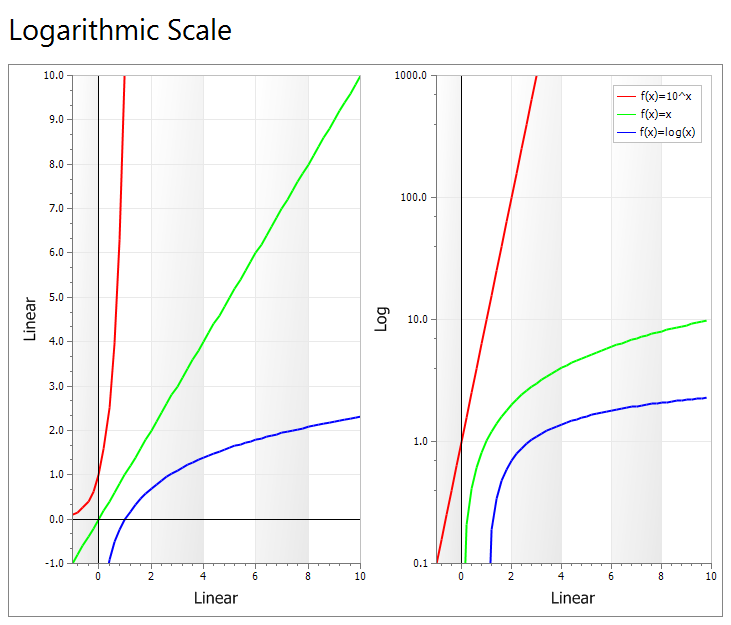

Logarithmic Property
| Xtreme Chart Pro ActiveX Control v15.3 |
Specifies whether to use a logarithmic scale for this axis with the base specified by LogarithmicBase.
Read-write property
Public Property Logarithmic() As BooleanTrue if this axis uses a logarithmic base, False if it uses a linear base.
A logarithmic scale allows data across a very large range to be displayed in an easy to read chart. The base of the scale is specified by LogarithmicBase, with a default of base 10.

'Logarithmic scale sample
Private Sub Form_Load()
ChartControl.Content.Legend.Visible = True
ChartControl.Content.Legend.HorizontalAlignment = xtpChartLegendFar
Dim Diagram As ChartDiagram2D
Set Diagram = New ChartDiagram2D
ChartControl.Content.Diagrams.Add Diagram
Diagram.AxisY.Title = "Linear"
Diagram.AxisX.Title = "Linear"
Diagram.AxisX.Title.Visible = True
Diagram.AxisY.Title.Visible = True
Diagram.AxisY.Label.Format.Category = xtpChartNumber
Diagram.AxisY.Label.Format.DecimalPlaces = 1
Diagram.AxisY.Label.Format.UseThousandSeparator = False
Diagram.AxisY.Range.AutoRange = False
Diagram.AxisY.Range.MinValue = -1
Diagram.AxisY.Range.MaxValue = 10
Diagram.AxisX.Range.AutoRange = False
Diagram.AxisX.Range.MinValue = -1
Diagram.AxisX.Range.MaxValue = 10
Dim Line As ChartAxisConstantLine
If (Diagram.AxisX.ConstantLines.Count = 0) Then
Set Line = Diagram.AxisX.ConstantLines.Add("")
Line.AxisValue = 0
Line.LegendVisible = False
End If
If (Diagram.AxisY.ConstantLines.Count = 0) Then
Set Line = Diagram.AxisY.ConstantLines.Add("")
Line.AxisValue = 0
Line.LegendVisible = False
End If
AddSeriesCombination Diagram, False
Set Diagram = New ChartDiagram2D
ChartControl.Content.Diagrams.Add Diagram
Diagram.AxisY.Title = "Log"
Diagram.AxisX.Title = "Linear"
Diagram.AxisX.Title.Visible = True
Diagram.AxisY.Logarithmic = True
Diagram.AxisY.LogarithmicBase = 10
Diagram.AxisY.Title.Visible = True
Diagram.AxisY.Label.Format.Category = xtpChartNumber
Diagram.AxisY.Label.Format.DecimalPlaces = 1
Diagram.AxisY.Label.Format.UseThousandSeparator = False
Diagram.AxisY.Range.AutoRange = False
Diagram.AxisY.Range.MinValue = 0.1
Diagram.AxisY.Range.MaxValue = 1000
Diagram.AxisX.Range.AutoRange = False
Diagram.AxisX.Range.MinValue = -1
Diagram.AxisX.Range.MaxValue = 10
If (Diagram.AxisX.ConstantLines.Count = 0) Then
Set Line = Diagram.AxisX.ConstantLines.Add("")
Line.AxisValue = 0
Line.LegendVisible = False
End If
AddSeriesCombination Diagram, True
End Sub
Sub AddSeriesCombination(Diagram As ChartDiagram, LogY As Boolean)
Dim Series As ChartSeries
Set Series = ChartControl.Content.Series.Add("f(x)=10^x")
Series.ArgumentScaleType = xtpChartScaleNumerical
Set Series.Style = CreateSeriesStyle
Set Series.Diagram = Diagram
Series.Style.Color = vbRed
If (Not Diagram Is ChartControl.Content.Diagrams(0)) Then Series.LegendVisible = False
Dim x As Single, xStart As Single
For x = -2 To 10 Step 0.2
Series.Points.Add x, 10 ^ x
Next x
Set Series = ChartControl.Content.Series.Add("f(x)=x")
Series.ArgumentScaleType = xtpChartScaleNumerical
Set Series.Style = CreateSeriesStyle
Set Series.Diagram = Diagram
Series.Style.Color = vbGreen
If (Not Diagram Is ChartControl.Content.Diagrams(0)) Then Series.LegendVisible = False
xStart = IIf(LogY, 0.01, -1)
For x = xStart To 10 Step 0.2
Series.Points.Add x, x
Next x
Set Series = ChartControl.Content.Series.Add("f(x)=log(x)")
Series.ArgumentScaleType = xtpChartScaleNumerical
Set Series.Style = CreateSeriesStyle
Set Series.Diagram = Diagram
Series.Style.Color = vbBlue
If (Not Diagram Is ChartControl.Content.Diagrams(0)) Then Series.LegendVisible = False
xStart = IIf(LogY, 1.01, 0.2)
For x = xStart To 10 Step 0.2
Debug.Print "log " & x & " - " & Math.log(x)
Series.Points.Add x, Math.log(x)
Next x
End Sub